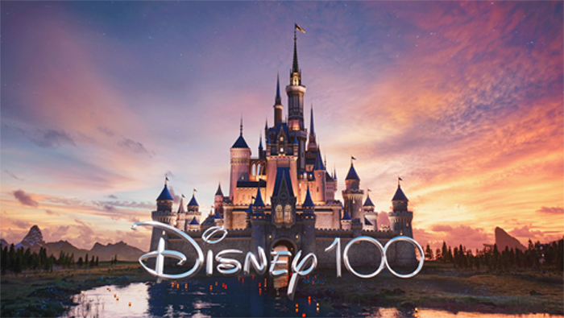

| INICIO | GALERÍA | LISTA DE EPISODIOS | LIBROS | PREMIOS | ALEX HIRSCH | MAS INFORMACION |
The Walt Disney Company también llamado simplemente Disney, es el conglomerado de medios de comunicación y entretenimiento estadounidense más grande del mundo. Su actual sede se halla en Burbank, California.
Fundada por Walt Disney y Roy O. Disney el 16 de octubre de 1923, el estudio empezaría a competir en 1928 contra Fleischer Studios con Steamboat Willie, Mickey Mouse y con los cortometrajes Silly Symphonies; y en 1930 empezaría la producción de Snow White and the Seven Dwarfs (Blanca Nieves y los siete enanos / Blancanieves y los siete enanitos), que sería estrenada en 1937, la cual tuvo éxito al poco tiempo de fundarse la compañía, con un valor de producción de 1 250 000 dólares. Este largometraje haría que la compañía empezara a tener reconocimiento, hasta el día de hoy.
Es operadora y licenciataria de parques temáticos y diversos canales de televisión abierta y de pago, como American Broadcasting Company, ESPN y los variados canales de Disney Branded Television. Las oficinas corporativas se encuentran concentradas principalmente en The Walt Disney Studios en Burbank, California. La compañía cotiza en la Bolsa de Valores de Nueva York desde el 6 de mayo de 1991. Disney en la actualidad es el conglomerado mediático más grande del mundo seguido de Comcast, AT&T y Paramount Global.
El valor total de sus acciones, según Forbes, hasta mayo de 2015 era de 500 000 millones de dólares.
El 14 de diciembre de 2017, la compañía anunció planes para la fusión con la multinacional 21st Century Fox por US$52 400 millones de dólares. El 19 de marzo de 2019 fue confirmada esta fusión por Disney en sus redes sociales y en su página web, diciendo que en realidad la compra de la mayor parte de los activos de 21st Century Fox fue de US$71 300 millones y que entró en vigencia el 20 de marzo de 2019.
El 8 de noviembre de 2018, la compañía anunció el nombre oficial de su plataforma de contenidos de streaming llamada Disney+, la cual fue lanzada en noviembre de 2019.
El 14 de mayo de 2019 se confirmó que la empresa tomará el control total de la plataforma estadounidense de streaming Hulu, debido a que se llegó a un acuerdo donde Comcast le permitió que compre su participación del 33% de la compañía hasta 2024, compañía que poseía junto con AT&T (posteriormente vendió su porcentaje del 10% a Disney), 21st Century Fox (posteriormente adquirida por Disney obteniendo un 60% de Hulu) y con Comcast como accionista silencioso.7. Hay canales restantes. Disney Channel, Disney Junior y la última es Disney XD de su propia programación de Fox Kids y Jetix.